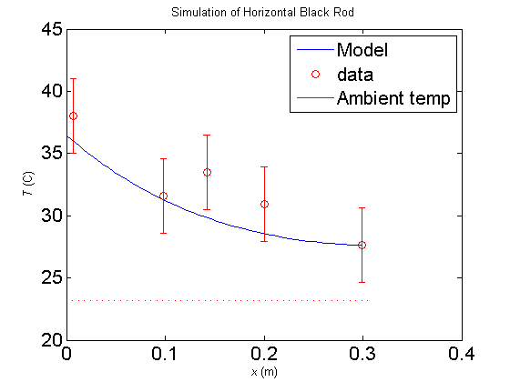

Contents
Horizontal Black rod Steady State simulation
clear all;
close all;
load('June17BlackRodHorizontal-SteadyState');
radius = 0.0111;
length = 0.305;
nstep = 50;
dx = length/nstep;
k = 180;
sigma = 5.67e-8;
emsv = 0.9;
fudge = 1.0;
alpha = 1.9e-5;
g = 9.81;
kc = 26;
emsv_elec_tape = 0.95;
width_tape = .020;
pwrR_Area = ((.0155*.0207) + 2*(.0155*.002) + 2*(.0207*.002));
emsvR = 0.8;
h5 = 0.006;
h4 = 0.105;
h3 = 0.163;
h2 = 0.207;
h1 = 0.298;
t1st = h1 - width_tape/2;
t2st = h2 - width_tape/2;
t2end = h2 + width_tape/2;
t3st = h3 - width_tape/2;
t3end = h3 + width_tape/2;
t4end = h4 + width_tape/2;
t4st = h4 - width_tape/2;
t5end = h5 + width_tape/2;
readRangeStart = 1;
readRangeEnd = 700;
sensorDataC = 1:6;
offset = offsetCalculator('June17BlackRodHorizontal-Heating',60,6);
calibratedData = Calibrate(readings,readRangeStart,readRangeEnd,6);
for i = 1:6
sensorDataC(i) = mean(calibratedData(i,:)) + offset(i);
end
sensorPos = [h1 h2 h3 h4 h5];
x = 1:nstep;
T = 1:nstep;
Tamb = sensorDataC(6)+273;
T(1) = sensorDataC(5)+273;
P_conv_end = kc * pi * radius^2 * (T(1) - Tamb);
P_conv_cyl = kc * 2 * pi * radius * dx * (T(1) - Tamb);
P_rad_end = sigma * emsv * pi * radius^2 *(T(1)^4 - Tamb^4);
P_rad_cyl = sigma * emsv_elec_tape * 2 * pi * radius * dx *(T(1)^4 - Tamb^4);
P_out = P_conv_end + P_conv_cyl + P_rad_end + P_rad_cyl;
P_in = P_out;
x(1) = dx;
for i = 2:nstep
x(i) = i * dx;
P_out = P_in;
T(i) = T(i-1);
if (x < t5end) | (x > t4st & x < t4end) | (x > t3st & x < t3end) | (x > t2st & x < t2end) | (x > t1st)
P_conv_cyl = kc * 2 * pi * radius * dx *(T(i) - Tamb);
P_rad = emsv_elec_tape * sigma * (2*pi*radius)*dx*(T(i)^4-Tamb^4);
P_loss = P_conv_cyl + P_rad;
else
P_conv_cyl = kc * 2 * pi * radius * dx *(T(i) - Tamb);
P_rad = emsv * sigma * (2*pi*radius)*dx*(T(i)^4-Tamb^4);
P_loss = P_conv_cyl + P_rad;
end
P_in = P_out + P_loss;
dT = P_in * dx/(k * pi * radius^2);
T(i) = T(i) + dT;
end
pwrR_rod = P_in;
pwrR_tot = 9*.6;
pwrFract = pwrR_rod/(pwrR_tot);
display(pwrFract);
pwrFract =
0.892475316979505
figure
plot(length - x,T-273);
hold on
errorbar(length - sensorPos,sensorDataC(1:5),[3 3 3 3 3],'ro');
plot(x,Tamb-273,'r');
title('Simulation of Horizontal Black Rod');
legend('Model','data','Ambient temp');
xlabel('{\it x} (m)')
ylabel('{\it T} (C)')
set(gca, 'FontSize', 16)
set(gca, 'FontName', 'TimesRoman')
